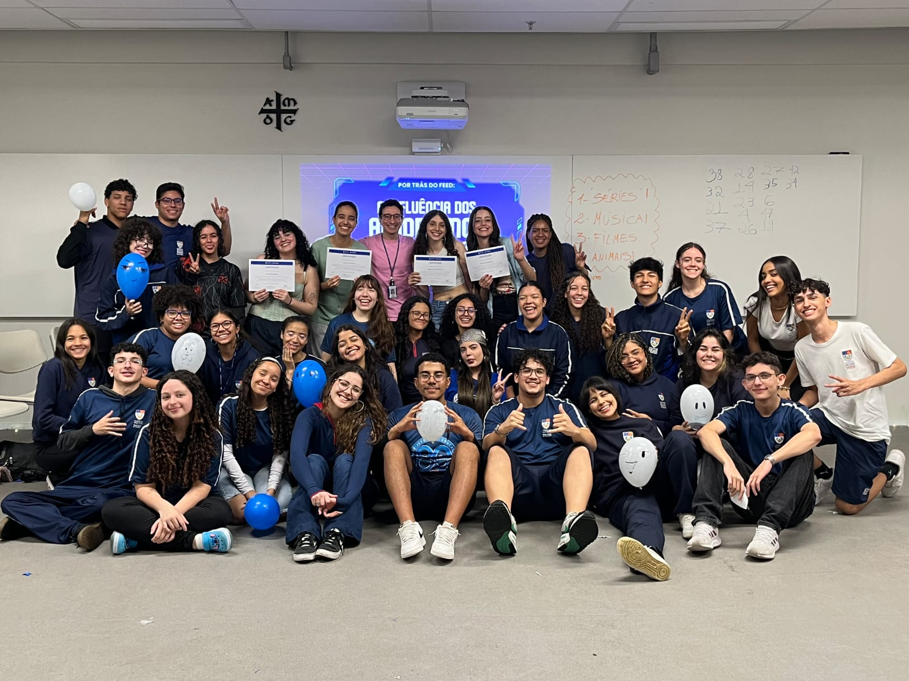
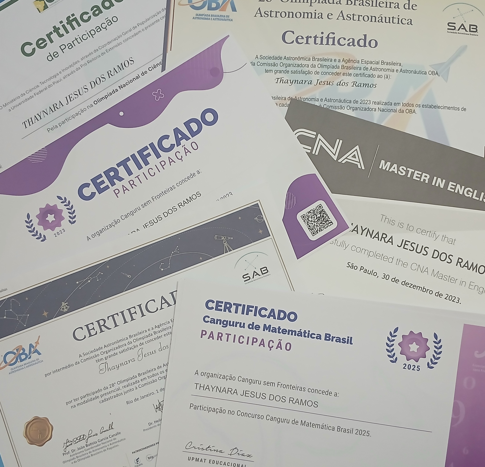
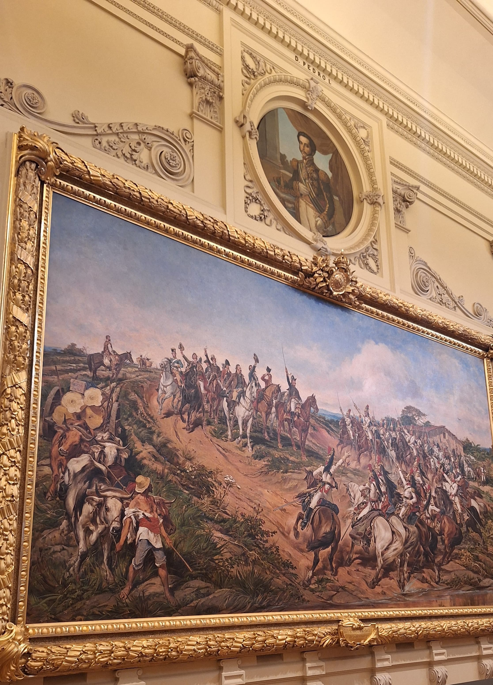
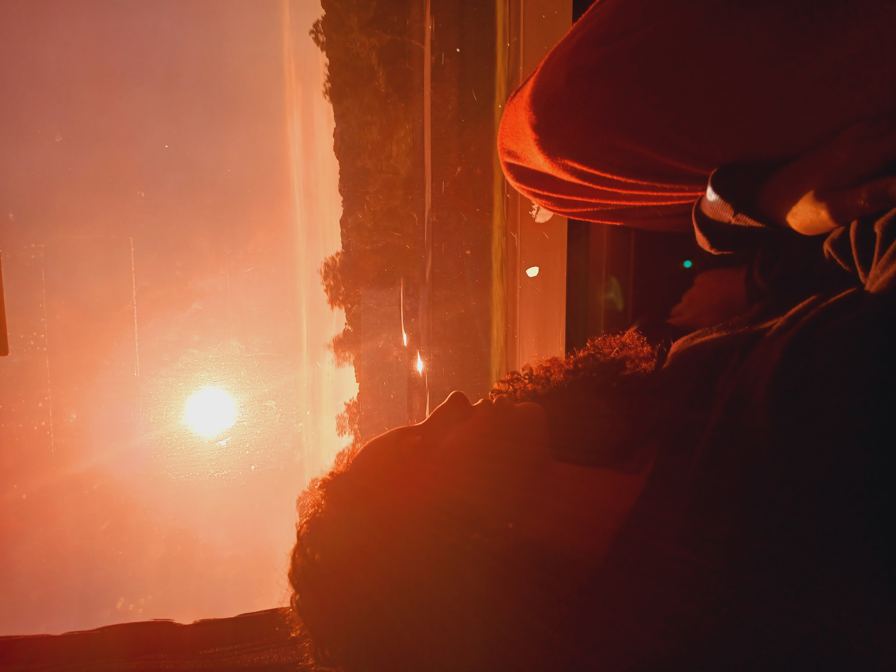
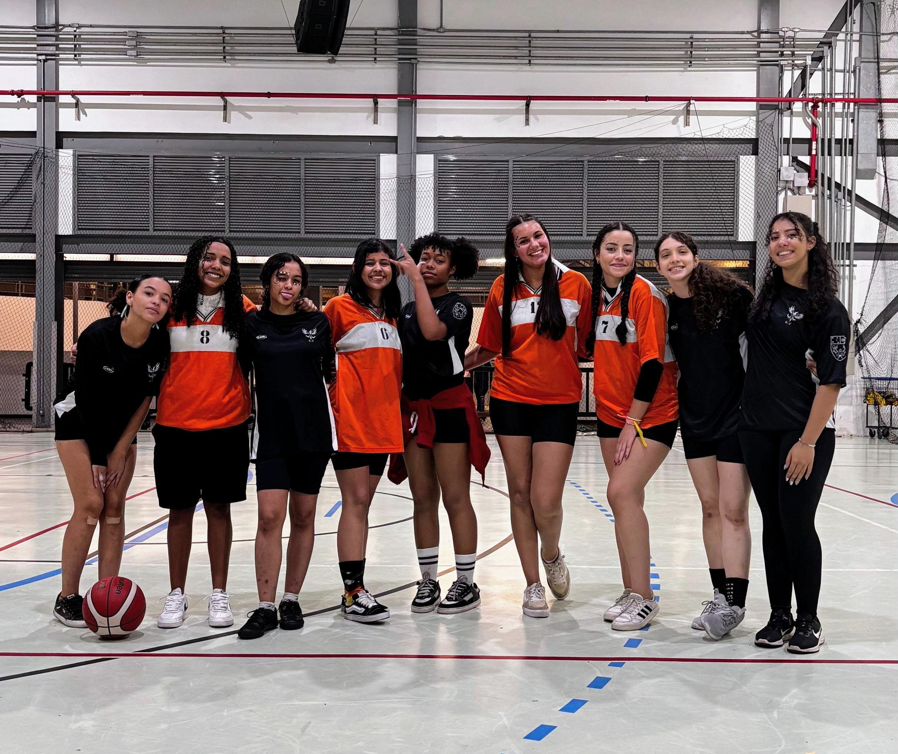
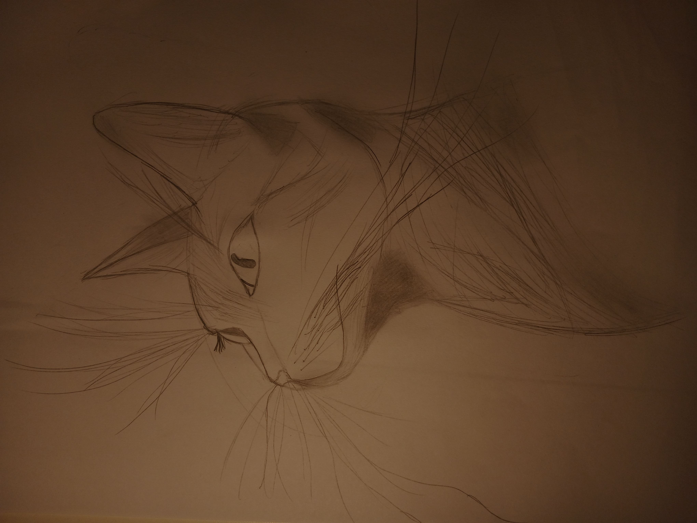
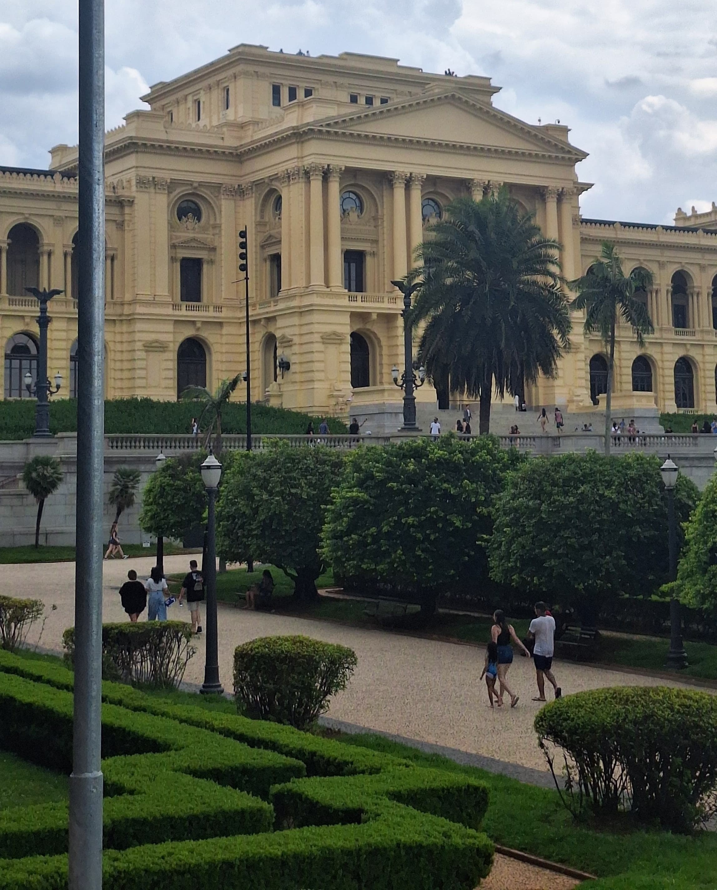

Thaynara Jesus dos Ramos
.jpg)
Eu sou Thaynara Ramos: estudante de Ciência da Computação na Fundação Educacional Inaciana Padre Sabóia de Medeiros (FEI).
Informações pessoais:
Carreira
Atuei como professora de inglês na rede CNA Idiomas, minitrando aulas para crianças, adolescentes e adultos. Além disso, planejei aulas e acompanhei o desenvolvimento dos alunos, desenvolvendo habilidades de comunicação, organização e didática. Atualmente, curso ciência da computação e tenho interesse em desenvolver conhecimentos e experiências na área da tecnologia. Aqui são alguns projetos que desenvolvi e participei:
A Simulação Interna das Nações Unidas (SINU).é um evento que reúne estudantes de diferentes instituições para discutir temas globais e promover o diálogo intercultural, que reproduz o funcionamento dos comitês da Organização das Nações Unidas (ONU). A atividade teve duração de 30 horas, e participei como jornalista do Comitê de Imprensa, atuando na cobertura dos debates e na produção de conteúdo informativo.
 |
|---|
A Mesa Redonda foi um projeto que eu apresentei no 7° Congresso do Colégio São Luís:"Mundo Digital: Utopia e Distopia- Por uma Tecnologia mais Humana". O meu tema abordado foi "Por tras do feed: a influência dos algoritmos nas redes socias". Durante a apresentação, retratei a relação entre a tecnologia e a sociedade, duscutindo como essas tecnologias influenciam decisões, comportamentos e relações no mundo atual, além da importância de desenvolver soluções tecnológicas mais éticas.
 |
|---|
Participiei de Olímpiadas Brasileiras de conhecimento, com foco no desenvolvimento do raciocínio logico, científico e matemático. Como a Olimpíada Brasileira de Astronomia e Astronáutica (OBA), Olimpíada Nacional de Ciencias (ONC) e Concurso Canguru de Matemática.
Idiomas:
Meus hobbies:
No meu tempo livre, curto:
Algumas imagens dos meus hobbies:
 |  |
 |
 |
 |
|---|